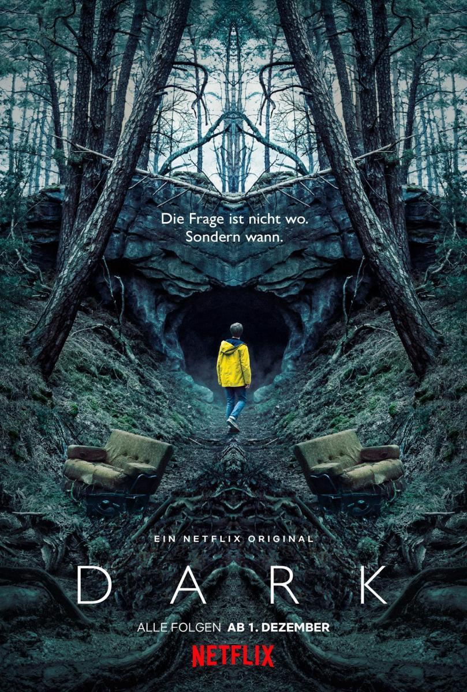

| Título | Resumen | Datos Técnicos | Foto |
The Simpson |
La serie es una sátira de la sociedad estadounidense que narra la vida y el día a día de una familia de clase media de ese país que vive en un pueblo ficticio llamado Springfield |
Matt Groening, Sam Simon, James L. Brooks 1989 Estados Unidos Danny Elfman FOX |

|
|---|---|---|---|
Breaking Bad |
Walter White, un profesor de química de un instituto de Albuquerque, Nuevo México, se entera de que tiene un cáncer de pulmón incurable. Casado con Skyler y con un hijo discapacitado, la brutal noticia lo impulsa a dar un drástico cambio a su vida: decide, con la ayuda de un antiguo alumno, fabricar anfetaminas y ponerlas a la venta |
Vince Gilligan Bryan Cranston, Aaron Paul, Anna Gunn, Dean Norris 2008 Estados Unidos Dave Porter AMC |
|
Rick y Morty |
Comedia animada que narra las aventuras de un científico loco, Rick Sánchez, que regresa después de 20 años para vivir con su hija, su marido y sus hijos, Morty y Summer |
Dan Harmon, Justin Roiland 2013 Estados Unidos Ryan Elder, Jason Nesmith Adult Swim |
|
Dark |
Tras la desaparición de un joven, cuatro familias desesperadas tratan de entender lo ocurrido a medida que van desvelando un retorcido misterio que abarca tres décadas |
Baran bo Odar, Jantje Friese Louis Hofmann, Anna König, Roland Wolf, Oliver Masucci, Jördis Triebel 2017 Alemania Ben Frost Netflix |

|